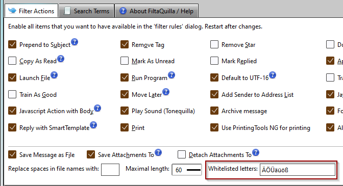
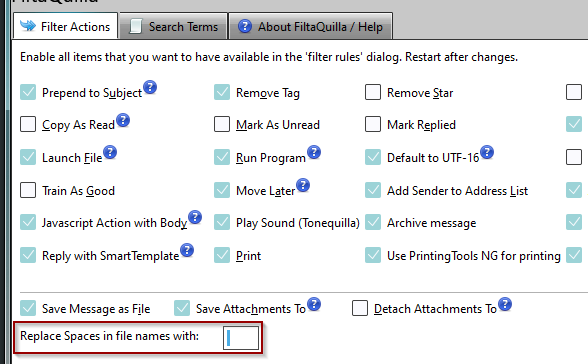
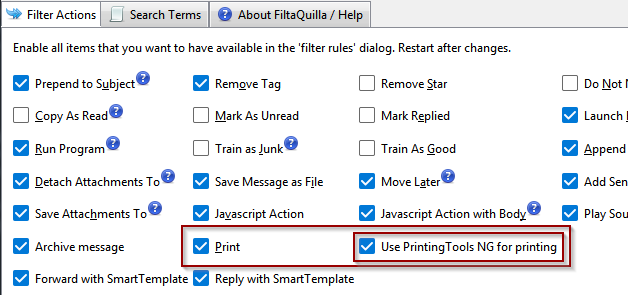
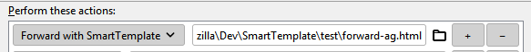
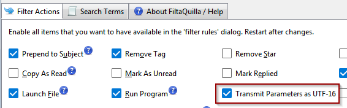
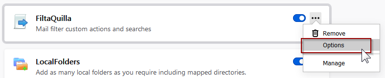

Official Versions
FiltaQuilla is officially distributed on addons.thunderbird.net.
Please go to the github FiltaQuilla Issue Tracker on github for reporting bugs!
Version History
-
FiltaQuilla 3.7 - 21/03/2024
Improvements
-
This is achieved via a whitelist, which you can now enter on the actions tab:

Bug Fixes
- [issue 180] Repair Archiving with Thunderbird 102 - using MessageArchiver instead of BatchMessageMover.
-
-
FiltaQuilla 3.6 - 26/10/2022
Maintenance 3.6.1
-
[issue 183] "Save Attachments To" alters attachment filename - this is in sync with naming conventions of the save attachment, in order to avoid invalid characters.
The following characters were added to whitelist:
( ) _ - + ' ! % andspace Also added an optional replacement character for spaces:

Release 3.6 - 17/10/2022
- [issue 165] Support printing the same email multiple times
- Fixed [issue 177] Attachments with illegal filenames are not saved correctly
- Fixed [issue 135] Action of "Detach Attachments To" doesn't detach from message (only saves attachments)
- Fixed [issue 178] Subject or Body (Regular expression) - missing Textbox.
-
-
FiltaQuilla 3.5 - 13/07/2022
- FiltaQuilla is now compatible with Thunderbird 102. FiltaQuilla had to have some necessary changes for Thunderbird 102, especially custom search terms and actions could not be edited anymore. As part of this work, I had to raise the minimum version to 91.0.
- Added help topics for "reply with SmartTemplates" / "forward with SmartTemplates".
- [issue 167] Fixed: Playback of sounds not working in Thunderbird - Replaced sounds with ogg format. For licensing reasons, Thunderbird cannot play back mp3 files natively, please use the provided ogg files instead. You can convert your own sound files to ogg with the Software freac (Free Audio Converter)
- [issue 164] Fixed: Edit fields for search terms / actions not displayed in Thunderbird 102 when dialog loads
- Improved Icon coloring for file pickers in filter editor - these now support dark themes in Thunderbird 102.
-
FiltaQuilla 3.4 - 18/03/2022
- [issue 125] Add ability to archive messages from filters.
-
[issue 152] Support printing via PrintingTools NG by Christopher Leidigh. See also [issue 94] on the PrintingTools github. Use the "Print" action of FiltaQuilla and also enable the option for PrintingTools NG in FiltaQuilla settings:

The action to select in the filter dialog is simply "Print". -
[issue 153] Auto-Forward / Auto-Reply with template - implement triggering template from filter (using FiltaQuilla) this requires the Add-on SmartTemplates Pro version 3.11 or later. SmartTemplates adds a plethora of Composing functionality, such as replacing text or quote headers from the quoted email and also adding / removing recipients and cleaning subject lines.

Planned to work from SmartTemplates 3.11 forward.The template is an external HTML file that must also set the recipient (list) when forwarding mail. See also SmartTemplates pro feature documentation for detailed instructions.
- [issue 102]
Run Program: New option to transmit parameters as UTF-16 format in order to correctly submit non-latin characters
such as cyrillic: To enable the new option, check the new option "Transmit Parameters as UTF-16"

-
FiltaQuilla 3.3 - 21/01/2022
Bugs Fixed
- [issue 130] Fixed: print automation is not working with Thunderbird Version 91.2.1 - this was due to internal changes in Thunderbird
- [issue 142] Fixed: Add sender to list shows no results in the List / Account dropdown.
- [issue 144], [issue 131] Fixed: Save Message as File doesn't work with illegal filename characters in subject as "\", ":", "*", "|" or "?". these are now replaced with "-". Diacritics and special characters are replaced with phonetical equvialents. Case is now preserved, I assume that most file systems nowadays support this.
Improvements
- [issue 145] Filter value / "text area" is narrow and won't expand #145
-
FiltaQuilla 3.2 - 23/08/2021
If you would like to directly support FiltaQuilla with donation you can now do so here
- [issue 111] Make FiltaQuilla compatible with Thunderbird 91 - WIP. You can download test versions for Thunderbird 91.0 there as well.
- Please check the Issue Tracker for open problems and to add feature requests.
- [issue 115] Added body regexp match. This will search all text and html portions of the multipart messages for the pattern. Note that you may experience slower processing of large amounts of incoming mail due to having to download and stream full messages.
- [issue 75] Added combined Body+Subject Regexp match for convenience (contributed by diabolusss @ github)
- Added option to set regexp for case insensitive match by default
- [issue 53] Support saving files with Mime encoded subjects and file names with cyrillic / other characters.
- Options are now accessible via wrench symbol in Add-ons Manager
- Added Russian locale by ashed @ github
-
FiltaQuilla 3.1 - 09/03/2021
If you would like to directly support FiltaQuilla with donation you can now do so here
- Check the new Issue Tracker for open problems and to add feature requests.
- Settings have now been moved into the Add-ons screen. Open Add-ons Manager, click "..." on the FiltaQuilla entry and select "Options": 
- [issue 94]
Added ToneQuilla (sound notifications) functionality to FiltaQuilla. Removed some of the larger sounds and added the
following sounds from notificationsounds.com (CC license):
maybe-one-day-584, hold-your-horses-468, scratch-389, your-turn-491, knob-458, worthwhile-438, scissors-423.The default location which the provided sounds are unpacked into is in profile/extensions/filtaquilla. You can either add your own sounds there for convenience or point to sounds in other locations.
- [issue 95] Support instant apply for changes in Options Window.
- [issue 89] Fixed: Options missing in Add-ons Manager. The settings for FiltaQuilla have been moved to the ... menu on the Add-ons Manager and removed from the tools menu going forward.
- Completed strings in Swedish locale
- Fixed a problem with the German translation for "do not notify"
- [issue 97] Printing in background should not enable global setting 'print.always_print_silent' permanently.
-
FiltaQuilla 3.0.3 - 10/12/2020
- New version compatible with Thunderbird 78. Due to its "free as in beer" nature, this took a little longer than expected. The work was laborious and complex, see details below:
- [issue 64] Make FiltaQuilla compatible with Thunderbird 78 ESR. The gruelling detail on all the necessary work can be read there.
- All bindings were replaced with pure JavaScript. This affected editing all conditions that FiltaQuilla adds to the Filter Editor.
- Printing didn't work anymore, that is fixed now.
- [issue 45] Fixed "Move later" / "Copy as Read" For Thunderbird versions > 64
- [issue 76] Fixed detach attachments - if the attachment was already removed then no empty file is generated, but a message is shown in error console showing the "last seen location" where the attachment was originally detached to.
- Fixed behavior of opening FiltaQuilla page jumping to in-page links when a tab with the same basic URL is already shown
- 3.0.1 - version bump because I had to rerelease 2.1.2 fixing a syntax error in manifest.json of 2.1.1.
- 3.0.3 - fixed firstRun code so that support site is loaded on install / update.
-
FiltaQuilla 2.1.2 - 08/12/2020
- Currently working on a version for Thunderbird 78 - you can already get prereleases on my github. The detailed conversion process is discussed at [issue 64]
- 2.1.2 fixed a problem in manifest file (stric_max_verseion) that wouldn't allow it to update existing versions.
- 2.1.1 added strict_max_version to avoid this Add-on being installed in Tb78 - where it would be incompatible
- Fixed issue #34 Action "add sender to Address list" not working.
- Added Icons and fixed look on Address book picker in Filter Editor
- Corrected a string in german locale from "Nicht ändern" to "Nicht benachrichtigen"
- [issue 67] Help links in options dialog were misdirected to the wrong page
-
FiltaQuilla 2.0 - 13/12/2019
- Made Compatible with THunderbird 68. FiltaQuilla had to be largely rewritten for Thunderbird 68, with substantial help from Paweł Tomulik. Going forward most bugfixes / new features will be exclusively available for Thunderbird 68. The reason for this is that through architectural changes on the Mozilla code platform the code for Thunderbird 60 and earlier is substantially different.
- Check the new Issue Tracker for open problems.
- Added links to the quickFilters page for supporting the development team.
-
FiltaQuilla 1.5 - June 28, 2019
- Completed Dutch translation - thanks to Markh van BabelZilla.org
- Completed Swedish translation - thanks to A. Regnander - Phoenix
- Fixed issue #9 Error in Console - Services.prefs.getStringPref is not a function - affecting older versions of Thunderbird.
- Added debug option for future trouble shooting.
- Added support icons for filter actions and search terms: these open dedicated topics on the support pages.
- Added back inheritpane service module.
- Raised minimum version to Thunderbird 52. It is likely that the next version will be minimum 60, once it starts to support Thunderbird 68 to be future proof for 2020.
-
FiltaQuilla 1.4.1 - Nov. 15, 2018
- Fixed a problem with minver. Still compatible with Thunderbird 60.3 / ESR
-
FiltaQuilla 1.4 - Nov. 10, 2018
- Made compatible with Thunderbird 60
- Added localisation (German locale)
- If you want to help with translation into your language, check on: Babelzilla. (you will need a Babelzilla Login for this)
-
FiltaQuilla 1.3.2 - May 24, 2016
- This version fixes broken filter actions MoveLater and CopyAsSend caused by changes in recent versions of Thunderbird
-
FiltaQuilla 1.3.1 - May 22, 2015
- Version 1.3.1 fixes an error that prevented filter actions that train the junk filter.
-
FiltaQuilla 1.3.0 - Oct. 18, 2014
- Fixes issues in printing
- Adds optional file type when saving message
-
FiltaQuilla 1.2.0 - June 6, 2011
Provides compatibility with Thunderbird 5.0
Bug Fixes
- bug 313 Non-ascii characters don’t work in subjectRegEx
- bug 843 Remove lower case from headerRegEx (which prevented certain headers from being properly processed)
New Features
- Search term: Folder Name
- Custom action: Save Message to Folder
- Custom Action: Move Later
-
FiltaQuilla 1.1.0 - April 30, 2010
Bug Fixes
- A core bug that prevented custom searches from working in non-filter contexts was fixed in Thunderbird 3.0.5/3.1 beta 2.
- A core feature was added, beginning with Thunderbird 3.1 beta 2, that allows IMAP filter actions that need the message body to work. This FiltaQuilla version adds support for that term.
- Enabling of filter actions and search terms was divided into separate pages to prevent issues with view overflow.
New Features
- Custom action: javascript and javascript (needs body)
- Custom action: detach attachments from message (requires Thunderbird 3.1 beta 2 or later)
- Custom action: Suffix to subject. Previous action "append to subject", which was misnamed, was renamed to "prepend to subject" though existing defined actions will still work.
-
FiltaQuilla 1.0.1 - Jan. 18, 2010
This revision fixes three bugs:
- Fixed: M164 Filter action “Run” fails with second after-the-fact action
- Fixed: M165 RegEx search term has no method to add flags like case insensitive
- Fixed: M166 Custom search term values are not appearing in customize view
Support FiltaQuilla
10/Dec/2020
This Add-on was adopted from its previous author and creator R. Kent James who had to retire from Add-on development. It has been largely rewritten for Thunderbird 68 in December 2019, with substantial help from Paweł Tomulik. It had to be rewritten again in November / December 2020 for Thunderbird 78, with more benevolent assistance from Thunderbird employees Standard8 and John Bieling.
Support My Work!
As I am often asked about added features
for filter conditions and actions for my Add-on
quickFilters this is a good
location for extending Filter behavior.
If you want to support the FiltaQuilla project, please install quickFilters and
purchase a
quickFilters Pro license.
You can now also donate directly to filtaquilla here.
I am keeping the license for FiltaQuilla as GPL 3.0 for the time being.